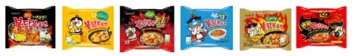
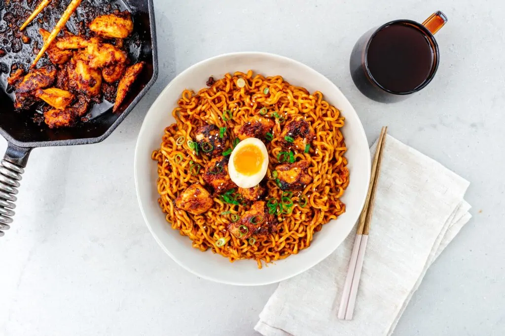

Buldak Ramen
Posted August 30, 2024 by Stephanie
What is buldak?
Buldak, aka fire chicken, is a spicy barbecued Korean chicken
dish. “Bul” means fire and “dak” means chicken. Buldak is bite
sized pieces of chicken doused in a spicy sauce made with
gochugaru, gochujang, soy sauce, jocheong (rice syrup), garlic,
and ginger. It’s a pretty new dish that became popular in the
early 2000s both in part to buldak restaurants and Samyang
buldak instant noodles.
What is buldak ramen?
Buldak ramen, made famous by popular Korean brand Samyang are
SUPER spicy instant ramen noodles. They’re called buldak
bokkeum myeon or hot chicken flavor ramen and essentially
they’re instant ramen that are buldak flavored. They are one
of the spiciest instant noodles available in the world and
there are several different flavors. Unlike most instant ramens
that are soupy, buldak ramen is a sauced noodle: after the
noodles are cooked, they’re drained and mixed with the buldak
sauce. The noodles are incredibly popular and Samyangs best
selling noodle.

Do you love spicy things? If so, you probably love buldak,
and you’ll probably love this homemade buldak ramen too.
It’s fiery hot, spicy red, and so, so good. It’s one of my
favorite things at Korean restaurants even though it’s so
spicy I can’t handle. It’s also super popular for Korean BBQ.
I especially love it with cheese!
How to make buldak ramen
Mix up the sauce. In the bowl you want to eat your noodles in,
mix up 1 tbsp gochujang, 1 tbsp gochugaru, 1 tbsp soy sauce,
2 tsp sugar, 1 tsp chicken bullion powder, 1 clove garlic,
and 1/4 tsp black pepper.
Cook the noodles. Cook the noodles according to the package.
Toss the noodles in sauce. When the noodles are ready, pull
them directly from the pot into the bowl with the sauce. Toss
until all the noodles are glossy and saucy, loosening with
noodle water if needed and get your spice on 🥵
Enjoy.
How spicy is buldak?
It’s pretty darn spicy! Every one’s spice tolerance is different
but I will say that the spice of buldak is one that builds and
builds. The nice thing about making it homemade is that you get
all of the flavor with only as much spice as you like